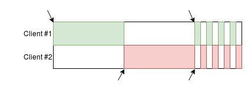
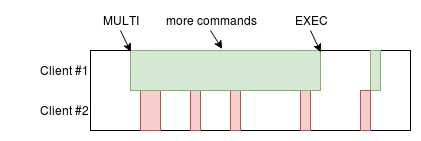

Atomicity in Redis
Thomas Hunter II
What is Atomicity?
- Series of database operations, aka a “transaction”
- Guaranteed to all run or none run
- Prevents operations from running partially
- The effects of all operations are immediately visible
- I.e. another client cannot see partial state
How does Redis work?
- Redis is Mostly Single-Threaded
- Except for things like Background IO
- Node.js is Mostly Single-Threaded
- Except for IO and Node v10 Worker Threads
- This becomes a problem with multiple clients
Every Single Command is Atomic
GET foo
SET foo 1
DEL foo
FLUSHALL
Multiple Commands aren't Atomic

- Scenario: Two clients want to increment
counter
Multiple Commands aren't Atomic

- Client #1 reads value of
counter
Multiple Commands aren't Atomic

- Client #2 reads value of
counter
Multiple Commands aren't Atomic

- Client #1 sets value of
counter to 1
Multiple Commands aren't Atomic

- Client #2 sets value of
counter to 1
Atomic, Multi-Operation Commands
- Common use-cases have single-command variants
INCR foo # GET ; foo++ ; SET
SETNX bar # EXISTS bar ; SET bar
RPOPLPUSH src dest # RPOP ; LPUSH
GETSET key value # GET ; SET
INCR is an Atomic Increment

- Scenario: Two clients want to increment
counter
INCR is an Atomic Increment

- Client #1 atomically increments value of
counter
INCR is an Atomic Increment

- Client #2 atomically increments value of
counter
Pipelining
- Ensures commands are run in order per-connection
- Sends a batch of commands separated by newlines
- Commands are sent in the same message
- The Node.js
redis module usually does this anyway
Pipelining: Example Code
redis.batch()
.zrangebyscore('jobs', 0, now) // get jobs
.zremrangebyscore('jobs', 0, now) // delete jobs
.exec((error, data) => {
let jobList = data[0];
console.log('jobs', jobList); // perform work
});
ZRANGEBYSCORE jobs 0 1553098369661
ZREMRANGEBYSCORE jobs 0 1553098369661
Pipelining: Not Atomic, Sorry
- Almost looks atomic
- Prevents command interleaving on one connection
- A subset of commands can fail
- No guarantee that other clients won't interleave

Pipelining: What's it for?
- Reducing network latency
- Send several commands in one message
- Receive several responses in one message
echo "PING\r\nPING\r\nPING\r\n" | nc localhost 6379
+PONG
+PONG
+PONG
MULTI: True Atomicity
- Atomic regardless of other clients / connections
- Client sends
MULTI, more commands, EXEC
- Other clients can still run commands
- Queued commands are run sequentially
- Any failures and the entire transaction fails

MULTI: Example Code
redis.multi()
.zrangebyscore('jobs', 0, now) // get jobs
.zremrangebyscore('jobs', 0, now) // delete jobs
.exec((error, data) => {
let jobList = data[0];
console.log('jobs', jobList); // perform work
});
MULTI
ZRANGEBYSCORE jobs 0 1553099335332
ZREMRANGEBYSCORE jobs 0 1553099335332
EXEC
MULTI Drawback: No command chaining
- Can't use command result as argument
- E.g., cannot pop from list, assign to new key
Lua: The Ultimate in Atomicity
- There's a simpler, less-efficient
EVAL command
- Send the entire script every time
- Like sending a normal SQL query
- Or use
SCRIPT LOAD ahead of time
- Then use
EVALSHA to run code via resulting hash
- Like executing a SQL Stored Procedure
- Declare key names as arguments for sharding
Lua: Server-Side Logic
- Output of one command can be piped into another
- Other processing can happen, too
Lua: Example Code
-- add-user.lua: add user to lobby, start game if 4 players
local lobby = KEYS[1] -- Set
local game = KEYS[2] -- Hash
local user_id = ARGV[1] -- String
redis.call('SADD', lobby, user_id)
if redis.call('SCARD', lobby) == 4 then
local members = table.concat(redis.call('SMEMBERS',lobby),",")
redis.call('DEL', lobby) -- empty lobby
local game_id = redis.sha1hex(members)
redis.call('HSET', game, game_id, members)
return {game_id, members}
end
return nil
Lua: Example Code
const redis = require('redis').createClient();
const rEval = require('util').promisify(redis.eval).bind(redis);
const script = require('fs').readFileSync('./add-user.lua');
const LOBBY = 'lobby-elo-1500', GAME = 'game-hash';
(async () => {
await rEval(script, 2, LOBBY, GAME, 'alice');
await rEval(script, 2, LOBBY, GAME, 'bob');
await rEval(script, 2, LOBBY, GAME, 'cindy');
const [gid,plyrs] = await rEval(script, 2, LOBBY, GAME,'tom');
console.log('GAME ID', gid, 'PLAYERS', plyrs.split(','));
})();
Lua: Drawbacks
- Another language to maintain (simple grammar)
- Increases overhead on Redis server
- An infinite loop could lock up server
- Need to load scripts before using to be efficient
- It's idempotent; load scripts when app starts
Recap
- Executing singular commands are atomic
- Executing multiple commands are not atomic
- Pipelining is not atomic, but it's fast
- MULTI is atomic, but you can't chain results
- Lua scripts are atomic and chainable
Intrinsic: Node.js Security Policies
const REDIS = 'redis://redishost:6379/1';
routes.allRoutes(policy => {
policy.redis.allowConnect(REDIS);
});
routes.get('/users/*', policy => {
policy.redis.allowCommandKey(REDIS, 'GET', 'user-*');
});
routes.post('/server/stats', policy => {
policy.redis.allowInfoSection(REDIS, 'memory');
});